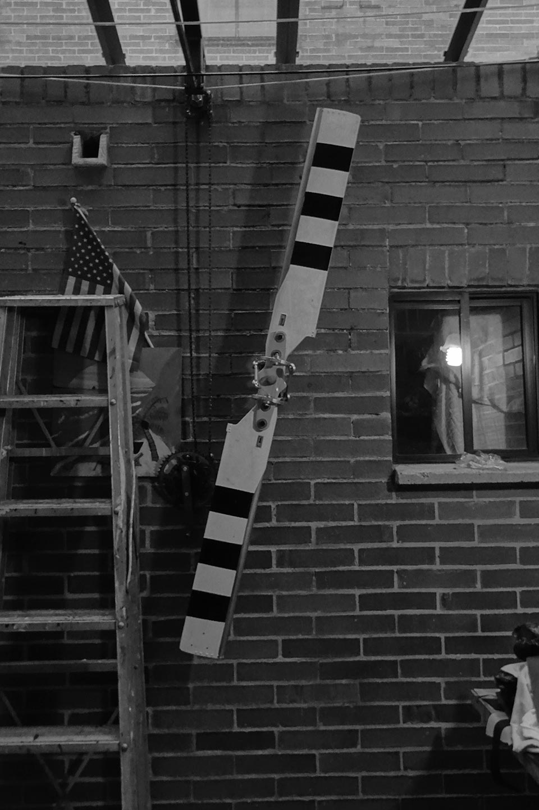
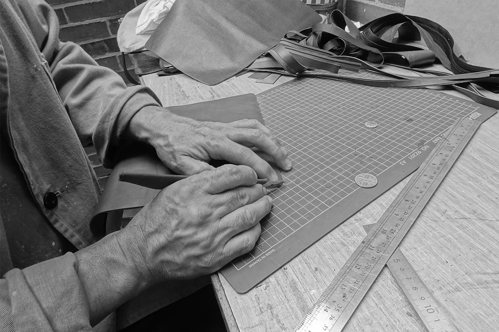
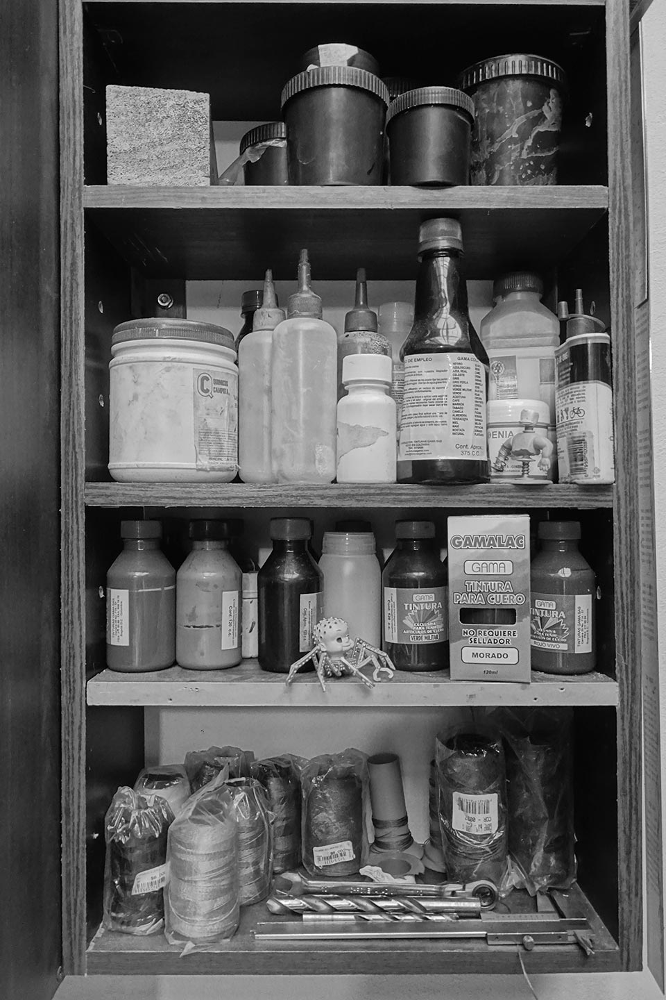
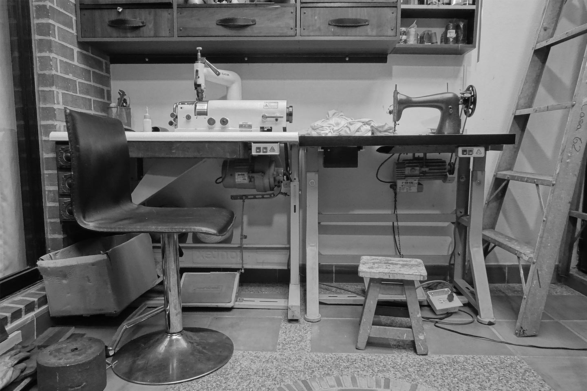
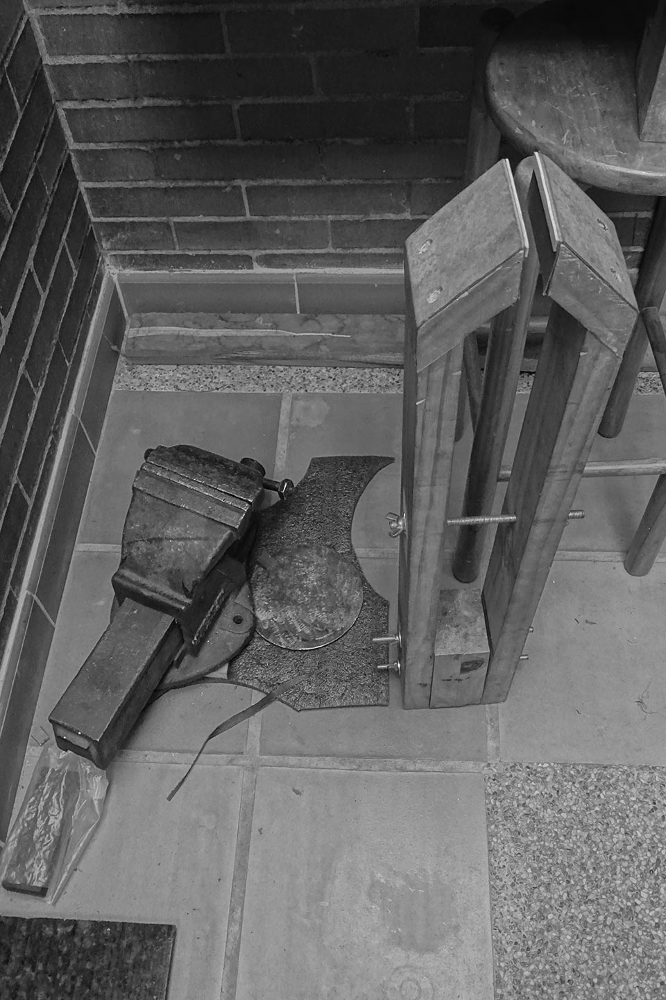
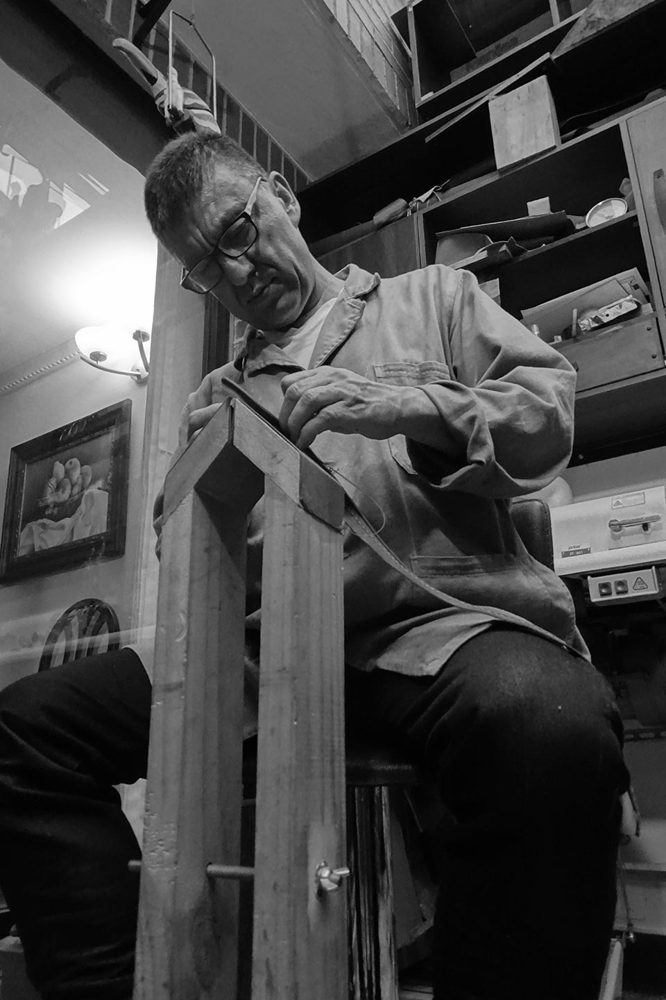

IF
Gerardo tiene 56 años. Nació y creció en Bogotá, Colombia. Hijo de padre boyacense y madre bogotana. Desde muy joven tuvo afinidad con los mecanismos y el mismo se hacía sus juguetes. Mis abuelos contribuyeron, sin darse cuenta, para empezar a desarrollar en él los talentos que lo llevarían a encaminarse correctamente en la vida de las tuercas y tornillos. Estudió el pregrado de Ingeniería Mecánica pero también es Técnico en Motores Diésel, Tecnólogo en Mecánica Automotriz y Técnico en Helicópteros. Pero ahora es Marroquinero graduado de la Escuela de Artes y Oficios Santo Domingo en Bogotá. Además es mi papá.
Su principal influencia fueron sus padres. Por el lado de mi abuela apareció el gusto por la costura y las máquinas de coser. Ella tejía en dos agujas y crochet, pero también fabricaba ropa y otras cosas para el hogar. Por el lado de mi abuelo, él trabajó mucho tiempo en calzado La Corona fabricando zapatos de cuero, así que ya poseía martillo de zapatero, un pie en hierro fundido y un refinado gusto por las cosas hechas a mano. Mis abuelos compartían un alto estándar en las cosas que hacían y compraban. Ambos creían en que el trabajo debía ser bien hecho o si no, mejor ni meterse a hacerlo. Esto llevo a Gerardo a que en todo lo que hiciera, fuera con el sello de la excelencia. La crianza de mis abuelos y la formación en Ingeniería Mecánica junto con la mecánica de helicópteros lo enseñaron a ser una persona que persigue la precisión y rechaza la mediocridad, características que se ven en sus piezas de cuero.
Hoy en día, su taller casero refleja un poco de esa personalidad trabajadora pero también juguetona y práctica. A pesar de ser una persona exigente con lo que hace y cree, es un hombre bastante juguetón y “tomador del pelo”. Se da el lujo de ser un poco más suelto en su taller aunque procura que no se acumule el desorden.

Este taller es el resultado de años de trabajo. No siempre fue todo tan sencillo. Él ama la mecánica pero es un trabajo que demanda el trabajar con gente de todo tipo junto con el gran esfuerzo físico que requiere. Ha tenido momentos que no son sencillos tanto laboral como personalmente. Pero tiene muchas historias que contar. Desde sus viajes a lugares de la selva para reparar un helicóptero que tumbó la guerrilla, hasta como reparaban la transmisión de un 212. Viajes en volquetas hasta clases de mecánica en el SENA con reinsertados de la guerrilla. Hasta las máquinas que ahora tiene, todas tienen una historia muy interesante y única.
Tiene una forma de ser muy particular. A donde llega, hace amigos y alegra el ambiente. Es una persona que trabaja bastante pero siempre saca tiempo para su familia. Aunque ya no se dedica a la mecánica, le es imposible abandonar los tornillos y sus herramientas. Una vez ingeniero no se puede volver atrás. Pero ahora tiene otro enfoque en la metalmecánica. Todavía vemos por ahí pedazos de motores y las brocas con los taladros no faltan. Siempre hay un proyecto en su mente que implica sus herramientas y antiguos conocimientos. Pero veo como las etapas y tiempos de la vida van cambiando en él y para nosotros como familia. Este es un oficio que requiere menos esfuerzo físico sin desmeritar el acto de diseño implícito que es lo que lo mantiene motivado. El amor y la pasión que finalmente se despertó expresada en colores, texturas y nuevas expresiones formales y útiles para la gente. Ha podido desarrollar productos que componen ambas disciplinas lo que hace que no sienta que dejó una por la otra. Hay suficiente espacio para ambas, en diferente medida, dentro de su taller.
Hoy, él es la fusión de muchas experiencias y conocimientos. La fe para empezar un nuevo proyecto, que ya lleva varios años incubándose, ahora está dando a luz una linda historia de renovación y resurrección expresada en cuero. Quien empezó como un ingeniero y tuvo su vida metida motores de helicópteros, carros, camiones y volquetas, hoy se deleita en desbastar piezas de cuero, con la calma de una persona ya reposada, para asombrar a los que llegan a conocer sus productos acompañados de la historia de su vida. El ingeniero mecánico que hoy es marroquinero.
